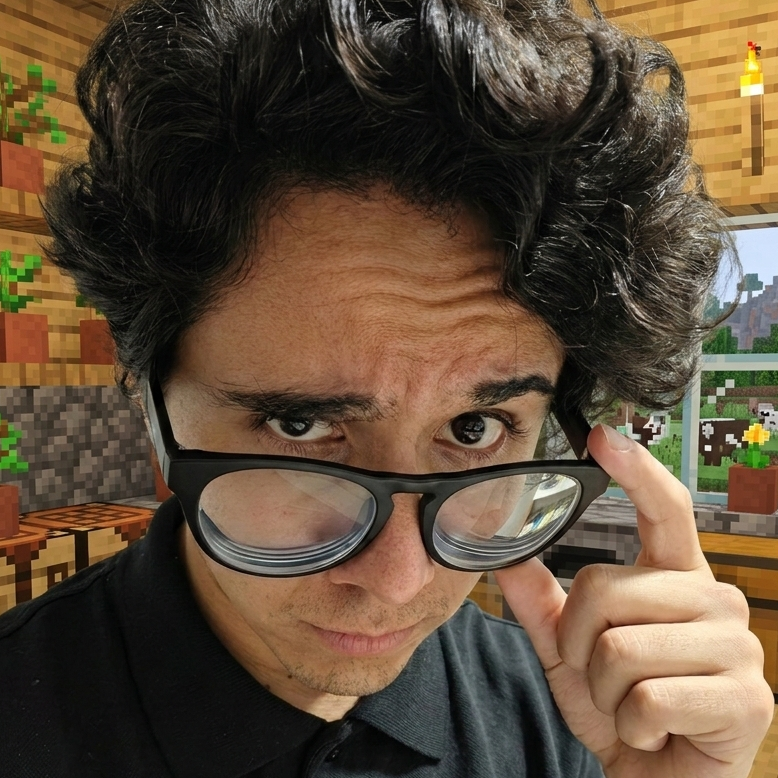
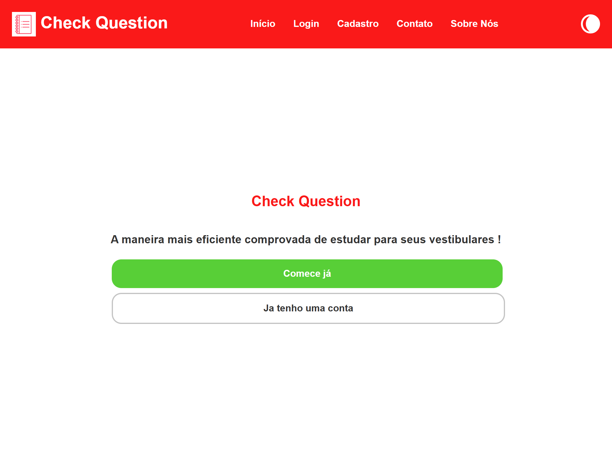
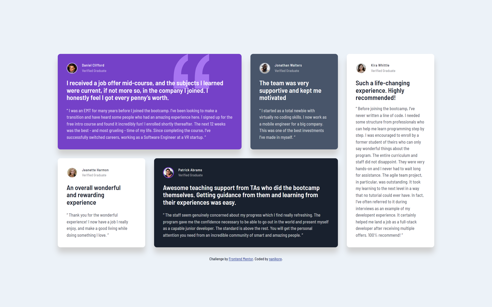
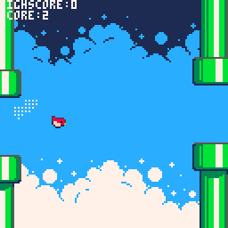
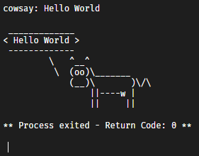
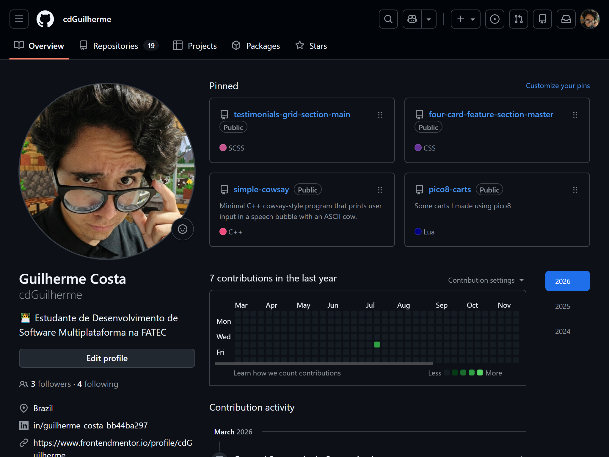

Check Question |
 Check Question foi o meu TCC da Etec Prof. Elias Miguel Junior. É uma plataforma onde você pode estudar para vestibulares que utiliza de gamificação para manter o engajamento do estudante, com feedback instantâneo ao realizar as questões, sistema de ranking para competir com outros estudantes, bloco de notas para estudos e mais. O sistema funciona como um CRUD e foi utilizado PHP, HTML, CSS, SCSS, JavaScript e SQL |
Desafio Frontend usando Grid - Depoimentos |
 O desafio de depoimentos utilizando grid é um desafio do site Frontend Mentor para testar e aprimorar minhas habilidades em frontend, nesse projeto eu utilizei bastante de grid para deixar o site responsível em diferentes telas e conseguir atender os padrões da WCAG (Web Content Accessibility Guidelines ou Diretrizes de Acessibilidade para Conteúdo Web). Neste projeto eu fiz o uso de marcações semânticas no HTML5, propriedades customizadas em CSS (variáveis), flexbox, grid, fluo de trabalho mobile-first, e SASS |
not flappy bird |
 Jogo inspirado em Flappy Bird usando a linguagem de programação Lua na engine do pico8, um console de videogame fantasia. Inclui a gameplay inspirada no jogo com um mapa que gera aleatóriamente conforme você joga, dificuldade que aumenta conforme você joga, 4 skins diferentes, suporte a touchscreen, e multiplas telas com a utilização de state machine. Clique aqui para jogar |
Cowsay C++ |
 Programa simples escrito em C++ inspirado no cowsay, recebe a entrada do usuário e exibe na tela em um balão de fala com uma vaca desenhada em ASCII |
Outros Projetos |
 Confira outros projetos que eu já fiz na minha página do GitHub |